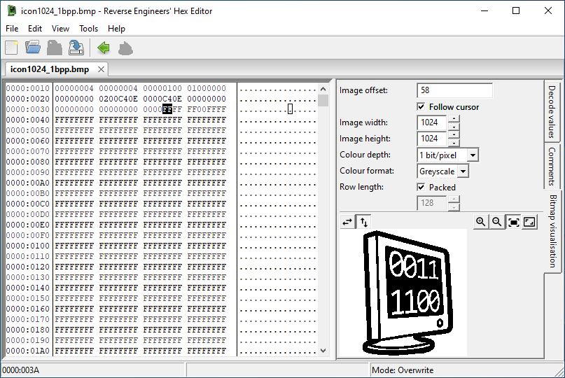

Bitmap Visualisation
The Bitmap visualisation tool (View menu > Tool panels > Bitmap visualisation) displays uncompressed image data stored in a file. Images up to 10,240 pixels by 10,240 pixels can be displayed, with depths of 1, 2, 4, 8, 16, 24 or 32 bits per pixel.
The row length option allows overriding the length of each row of pixels in the file, in bytes. This is intended for formats where there is padding at the end of every row (e.g. bitmap images are padded to the nearest 4 bytes). By default the "Packed" option is checked, and each row starts immediately after the last.
The preview image can be copied to the clipboard or saved out as a png/bmp by right clicking on the image.
